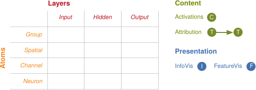
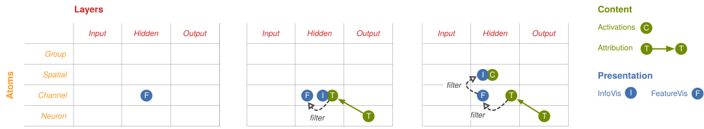

Khi mạng nơ-ron ngày càng thành công, nhu cầu giải thích các quyết định của chúng cũng tăng theo: để xây dựng niềm tin về cách chúng sẽ hành xử trong thế giới thực, phát hiện thiên lệch của mô hình, và phục vụ tò mò khoa học. Để làm được điều đó, ta cần vừa xây dựng các trừu tượng sâu, vừa hiện thực hóa chúng trong những giao diện giàu thông tin. Ngoại trừ một vài trường hợp, các nghiên cứu hiện có về diễn giải thường chưa làm tốt hai việc này cùng lúc.
Cộng đồng học máy chủ yếu tập trung phát triển các phương pháp mạnh như trực quan hóa đặc trưng, quy thuộc và giảm chiều để suy luận về mạng nơ-ron. Tuy nhiên, các kỹ thuật này thường được nghiên cứu như những nhánh riêng lẻ, còn công việc hiện thực hóa chúng thành giao diện lại bị xem nhẹ. Ngược lại, cộng đồng tương tác người-máy đã bắt đầu khám phá các giao diện người dùng phong phú cho mạng nơ-ron, nhưng chưa gắn kết sâu với các trừu tượng này. Khi các trừu tượng đó được dùng, chúng thường xuất hiện ở dạng khá chuẩn tắc và rời rạc.
Trong bài viết này, chúng tôi xem các phương pháp diễn giải hiện có như những khối nền tảng có thể ghép lại để tạo thành giao diện phong phú. Chúng tôi nhận thấy các kỹ thuật tưởng như rời rạc này có thể đi vào một ngữ pháp thống nhất, giữ những vai trò bổ sung cho nhau trong các giao diện kết quả. Hơn nữa, ngữ pháp này cho phép ta khảo sát có hệ thống không gian giao diện diễn giải và đánh giá liệu chúng có đáp ứng các mục tiêu cụ thể hay không. Chúng tôi sẽ trình bày các giao diện cho thấy mạng phát hiện điều gì và giải thích cách nó phát triển sự hiểu biết, trong khi vẫn giữ lượng thông tin ở quy mô con người.
Trong bài viết này, chúng tôi dùng GoogLeNet, một mô hình phân loại ảnh, để minh họa ý tưởng giao diện vì các nơ-ron của nó có vẻ mang ý nghĩa ngữ nghĩa một cách khác thường. Chúng tôi đang tích cực tìm hiểu lý do và hy vọng tìm ra các nguyên lý thiết kế mô hình dễ diễn giải. Trong lúc đó, dù các kỹ thuật được minh họa trên GoogLeNet, chúng tôi cung cấp mã để bạn thử trên các mô hình khác. Dù ở đây chúng tôi chọn một nhiệm vụ và một mạng cụ thể, các trừu tượng và mẫu kết hợp mà bài viết trình bày có thể áp dụng cho mạng nơ-ron trong những miền khác.
Hiểu các tầng ẩn
Nhiều nghiên cứu gần đây về diễn giải tập trung vào tầng đầu vào và tầng đầu ra của mạng nơ-ron. Có thể nói trọng tâm này đến từ ý nghĩa rõ ràng của các tầng đó: trong thị giác máy tính, tầng đầu vào biểu diễn giá trị các kênh màu đỏ, xanh lá và xanh dương cho từng pixel trong ảnh, còn tầng đầu ra gồm nhãn lớp và xác suất tương ứng.
Tuy nhiên, sức mạnh của mạng nơ-ron nằm ở các tầng ẩn: tại mỗi tầng, mạng khám phá một biểu diễn mới của đầu vào. Trong thị giác máy tính, ta dùng các mạng nơ-ron chạy cùng các bộ phát hiện đặc trưng tại mọi vị trí trong ảnh. Ta có thể hình dung biểu diễn đã học của mỗi tầng như một khối lập phương ba chiều. Mỗi ô trong khối là một activation, tức mức độ một nơ-ron kích hoạt. Trục x và y tương ứng với vị trí trong ảnh, còn trục z là channel, hay bộ phát hiện đang được chạy.
Để tạo một từ điển ngữ nghĩa, ta ghép mỗi activation của nơ-ron với một trực quan hóa của nơ-ron đó, rồi sắp xếp chúng theo độ lớn activation. Sự kết hợp giữa activation và trực quan hóa đặc trưng thay đổi cách ta tương tác với đối tượng toán học bên dưới. Activation giờ được ánh xạ sang các biểu tượng có tính hình ảnh thay vì các chỉ số trừu tượng; nhiều biểu tượng dường như tương ứng với các ý niệm nổi bật của con người như “tai mềm”, “mõm chó” hay “lông”.
Từ điển ngữ nghĩa mạnh không chỉ vì chúng rời khỏi các chỉ số vô nghĩa, mà còn vì chúng biểu đạt những trừu tượng mà mạng đã học bằng các ví dụ điển hình. Với phân loại ảnh, mạng nơ-ron học một tập trừu tượng thị giác, do đó ảnh là ký hiệu tự nhiên nhất để biểu diễn chúng. Nếu làm việc với âm thanh, ký hiệu tự nhiên hơn nhiều khả năng là các đoạn âm thanh. Điều này quan trọng vì khi nơ-ron có vẻ tương ứng với ý niệm của con người, ta rất dễ thu gọn chúng thành từ ngữ. Nhưng làm vậy là một phép nén mất mát, ngay cả với những trừu tượng quen thuộc.
Bằng cách đưa ý nghĩa vào các tầng ẩn, từ điển ngữ nghĩa đặt nền để các kỹ thuật diễn giải hiện có trở thành các khối nền tảng có thể ghép nối. Như ta sẽ thấy, giống như các vector bên dưới, ta có thể áp dụng giảm chiều lên chúng. Trong các trường hợp khác, từ điển ngữ nghĩa cho phép ta đẩy các kỹ thuật này xa hơn. Chẳng hạn, ngoài quy thuộc một chiều mà ta thường thực hiện giữa tầng đầu vào và đầu ra, từ điển ngữ nghĩa cho phép quy thuộc đến và từ các tầng ẩn cụ thể.
Mạng nhìn thấy gì?
Áp dụng kỹ thuật này cho tất cả vector activation cho phép ta không chỉ thấy mạng phát hiện gì tại từng vị trí, mà còn thấy mạng hiểu toàn bộ ảnh đầu vào như thế nào.
Và bằng cách làm việc xuyên qua nhiều tầng, ví dụ “mixed3a” và “mixed4d”, ta có thể quan sát cách sự hiểu biết của mạng tiến hóa: từ việc phát hiện cạnh ở các tầng sớm đến các hình dạng và bộ phận đối tượng tinh vi hơn ở các tầng sau.
Tuy nhiên, các trực quan hóa này bỏ sót một mảnh thông tin then chốt: độ lớn của activation. Bằng cách co giãn diện tích mỗi ô theo độ lớn của vector activation, ta có thể biểu thị mạng đã phát hiện đặc trưng ở vị trí đó mạnh đến mức nào:
Các khái niệm được lắp ghép như thế nào?
Trực quan hóa đặc trưng giúp ta trả lời mạng phát hiện gì, nhưng không trả lời mạng lắp ghép các mảnh riêng lẻ đó như thế nào để đi đến các quyết định về sau, hoặc vì sao các quyết định đó được đưa ra.
Quy thuộc là một tập kỹ thuật trả lời những câu hỏi như vậy bằng cách giải thích quan hệ giữa các nơ-ron. Có rất nhiều cách tiếp cận quy thuộc, nhưng đến nay dường như chưa có một đáp án rõ ràng là đúng. Thậm chí có lý do để nghĩ rằng mọi đáp án hiện tại đều chưa hoàn toàn đúng. Chúng tôi cho rằng còn rất nhiều nghiên cứu quan trọng cần làm về phương pháp quy thuộc, nhưng với mục tiêu của bài viết này, cách quy thuộc cụ thể không phải điểm cốt lõi. Chúng tôi dùng một phương pháp khá đơn giản: xấp xỉ tuyến tính quan hệ giữa các thành phần.
Quy thuộc không gian bằng bản đồ saliency
Giao diện phổ biến nhất cho quy thuộc được gọi là bản đồ saliency: một heatmap đơn giản làm nổi bật các pixel của ảnh đầu vào đã góp phần nhiều nhất vào phân loại đầu ra. Chúng tôi thấy cách tiếp cận hiện tại này có hai điểm yếu.
Thứ nhất, chưa rõ từng pixel riêng lẻ có nên là đơn vị chính của quy thuộc hay không. Ý nghĩa của mỗi pixel bị đan chặt với các pixel khác, không vững trước các biến đổi thị giác đơn giản như độ sáng hay tương phản, và cách xa các khái niệm cấp cao như lớp đầu ra. Thứ hai, bản đồ saliency truyền thống là một kiểu giao diện rất hạn chế: chúng chỉ hiển thị quy thuộc cho một lớp tại một thời điểm và không cho phép đào sâu vào từng điểm. Vì chúng không xử lý tầng ẩn một cách tường minh, rất khó khám phá đầy đủ vai trò của các tầng đó.
Thay vào đó, chúng tôi xem quy thuộc như một khối nền tảng giao diện khác và áp dụng nó lên các tầng ẩn của mạng nơ-ron. Làm vậy thay đổi các câu hỏi ta có thể đặt ra. Thay vì hỏi màu của một pixel cụ thể có quan trọng với phân loại “labrador retriever” hay không, ta hỏi ý niệm cấp cao được phát hiện tại vị trí đó, chẳng hạn “tai mềm”, có quan trọng hay không. Cách này gần với các phương pháp Class Activation Mapping, nhưng vì các phương pháp đó diễn giải kết quả trở lại ảnh đầu vào, chúng bỏ lỡ cơ hội giao tiếp bằng các khái niệm mà tầng ẩn đã học.
Giao diện trên cho ta một quan hệ linh hoạt hơn với quy thuộc. Trước hết, chúng tôi tính quy thuộc từ từng vị trí không gian của từng tầng ẩn được hiển thị đến cả 1.000 lớp đầu ra. Để trực quan hóa vector nghìn chiều này, chúng tôi dùng giảm chiều để tạo bản đồ saliency đa hướng. Khi đặt các bản đồ này lên lưới activation có kích thước theo độ lớn, ta có một “mùi thông tin” dẫn vào không gian quy thuộc. Các lưới activation neo quy thuộc vào vốn từ thị giác mà từ điển ngữ nghĩa đã thiết lập. Khi rê chuột, chú giải được cập nhật để cho thấy các lớp đầu ra liên quan nhất.
Có lẽ thú vị nhất, giao diện này cho phép ta tương tác thực hiện quy thuộc giữa các tầng ẩn. Khi rê chuột, các bản đồ saliency bổ sung che lên các tầng ẩn, như thể chiếu một luồng sáng vào những hộp đen của chúng. Kiểu quy thuộc từ tầng sang tầng này là một ví dụ điển hình cho việc cân nhắc thiết kế giao diện cẩn thận có thể thúc đẩy sự tổng quát hóa các trừu tượng diễn giải hiện có.
Với sơ đồ này, ta đã bắt đầu nghĩ về quy thuộc ở cấp khái niệm cao hơn. Tuy nhiên, tại một vị trí cụ thể, nhiều khái niệm đang được phát hiện cùng nhau và giao diện này khiến việc tách chúng ra trở nên khó. Khi vẫn tập trung vào vị trí không gian, các khái niệm đó còn bị vướng vào nhau.
Quy thuộc theo channel
Bản đồ saliency ngầm cắt khối activation bằng cách áp dụng quy thuộc lên các vị trí không gian của một tầng ẩn. Cách này gộp qua tất cả channel, nên ta không biết bộ phát hiện cụ thể nào tại mỗi vị trí đóng góp nhiều nhất cho phân loại đầu ra cuối cùng.
Một cách khác để cắt khối là theo channel thay vì theo vị trí không gian. Làm vậy cho phép ta thực hiện quy thuộc theo channel: mỗi bộ phát hiện đã đóng góp bao nhiêu vào đầu ra cuối cùng? Cách này tương tự một nghiên cứu cùng thời của Kim và cộng sự, trong đó họ quy thuộc cho tổ hợp channel đã học.
Sơ đồ này tương tự sơ đồ trước: ta thực hiện quy thuộc từ tầng sang tầng, nhưng lần này trên channel thay vì vị trí không gian. Một lần nữa, ta dùng các biểu tượng từ từ điển ngữ nghĩa để biểu diễn các channel đóng góp nhiều nhất cho phân loại cuối cùng. Rê chuột lên một channel sẽ hiển thị heatmap activation của nó phủ lên ảnh đầu vào. Chú giải cũng cập nhật để cho thấy quy thuộc của nó đến các lớp đầu ra, tức những lớp hàng đầu mà channel này ủng hộ. Nhấp vào một channel cho phép đào sâu vào quy thuộc giữa các tầng.
Dù các sơ đồ này tập trung vào quy thuộc từ tầng sang tầng, đôi khi vẫn hữu ích khi tập trung vào một tầng ẩn duy nhất. Ví dụ, hình teaser cho phép ta đánh giá giả thuyết về lý do một lớp thành công hơn lớp kia.
Quy thuộc đến vị trí không gian và channel có thể tiết lộ nhiều điều mạnh mẽ về mô hình, nhất là khi kết hợp chúng. Tiếc là họ phương pháp này gặp hai vấn đề lớn. Một mặt, rất dễ tạo ra lượng thông tin quá tải: con người có thể mất hàng giờ kiểm tra phần đuôi dài các channel chỉ ảnh hưởng nhẹ đến đầu ra. Mặt khác, cả hai kiểu gộp mà ta đã xét đều mất mát nhiều và có thể bỏ lỡ các phần quan trọng của câu chuyện. Dù ta có thể tránh gộp mất mát bằng cách làm việc với từng nơ-ron, số lượng nơ-ron lại quá lớn để con người xử lý.
Đưa mọi thứ về quy mô con người
Ở các phần trước, ta đã xét ba cách cắt khối activation: thành activation không gian, channel và từng nơ-ron. Mỗi cách đều có nhược điểm lớn. Nếu chỉ dùng activation không gian hoặc channel, ta bỏ lỡ những phần rất quan trọng của câu chuyện. Ví dụ, biết bộ phát hiện tai mềm giúp phân loại ảnh thành chó Labrador là thú vị, nhưng còn thú vị hơn khi kết hợp với các vị trí đã kích hoạt để làm điều đó. Ta có thể đào xuống cấp nơ-ron để kể toàn bộ câu chuyện, nhưng hàng chục nghìn nơ-ron lại quá nhiều để con người theo dõi.
Nếu muốn xây dựng giao diện hữu ích cho mạng nơ-ron, chỉ làm cho thông tin có ý nghĩa là chưa đủ. Ta cần làm nó ở quy mô con người, thay vì là một bãi đổ thông tin quá tải. Chìa khóa là tìm cách có ý nghĩa hơn để chia activation. Có lý do tốt để tin rằng các phân rã như vậy tồn tại. Thường thì nhiều channel hoặc vị trí không gian hoạt động cùng nhau theo cách rất tương quan và nên được nghĩ như một đơn vị. Các channel hoặc vị trí khác có rất ít hoạt động và có thể bỏ qua trong cái nhìn tổng quan cấp cao.
Có cả một lĩnh vực nghiên cứu gọi là phân rã ma trận chuyên nghiên cứu các chiến lược tối ưu để chia nhỏ ma trận. Bằng cách làm phẳng khối của ta thành một ma trận gồm vị trí không gian và channel, ta có thể áp dụng các kỹ thuật này để thu được các nhóm nơ-ron có ý nghĩa hơn. Các nhóm này sẽ không thẳng hàng tự nhiên với khối như những cách nhóm trước. Thay vào đó, chúng là tổ hợp của vị trí không gian và channel. Hơn nữa, các nhóm được xây dựng để giải thích hành vi của mạng trên một ảnh cụ thể; dùng lại cùng nhóm cho ảnh khác sẽ không hiệu quả.
Các nhóm sinh ra từ phân rã này sẽ là những nguyên tử của giao diện mà người dùng thao tác. Tiếc là mọi cách nhóm đều là một đánh đổi giữa việc giảm mọi thứ về quy mô con người và việc giữ lại thông tin, vì mọi phép gộp đều mất mát. Phân rã ma trận cho phép ta chọn tiêu chí tối ưu cho các nhóm, đem lại đánh đổi tốt hơn so với các nhóm tự nhiên đã thấy ở trên.
Mục tiêu của giao diện nên ảnh hưởng đến thứ ta tối ưu trong phân rã ma trận. Ví dụ, nếu muốn ưu tiên mô tả mạng đã phát hiện gì, ta muốn phân rã mô tả đầy đủ activation. Nếu muốn ưu tiên thứ sẽ thay đổi hành vi mạng, ta muốn phân rã mô tả đầy đủ gradient. Cuối cùng, nếu muốn ưu tiên điều đã gây ra hành vi hiện tại, ta muốn phân rã mô tả đầy đủ quy thuộc. Dĩ nhiên, ta có thể cân bằng ba mục tiêu này thay vì tối ưu chỉ một mục tiêu.
Trong sơ đồ sau, chúng tôi xây các nhóm ưu tiên activation bằng cách phân rã activation với non-negative matrix factorization. Như tên gọi gợi ý, phương pháp này ràng buộc các nhóm chỉ cộng các phần tử không âm, nên chúng dễ diễn giải hơn dưới dạng những thành phần có mặt trong ảnh.
Hình này chỉ tập trung vào một tầng duy nhất, nhưng như đã thấy, nhìn xuyên qua nhiều tầng có thể hữu ích để hiểu mạng nơ-ron lắp ráp các bộ phát hiện cấp thấp thành khái niệm cấp cao như thế nào.
Các nhóm ta xây trước đó được tối ưu để hiểu một tầng độc lập với các tầng khác. Để hiểu nhiều tầng cùng nhau, ta muốn phân rã của mỗi tầng “tương thích” với nhau: các nhóm ở tầng sớm hơn tự nhiên hợp thành các nhóm ở tầng muộn hơn. Đây cũng là điều ta có thể tối ưu trong phân rã. Trực giác là nếu một nhóm ở tầng sau nhận nhiều quy thuộc từ một nhóm ở tầng trước, hai nhóm đó nên được đặt trong quan hệ rõ ràng trong giao diện.
Trong phần này, ta nhận ra rằng cách chia khối activation là một quyết định giao diện quan trọng. Thay vì chấp nhận các lát cắt tự nhiên của khối activation, ta xây dựng các nhóm nơ-ron tối ưu hơn. Các nhóm cải thiện này vừa có ý nghĩa hơn vừa ở quy mô con người hơn, giúp người dùng đỡ vất vả khi hiểu hành vi của mạng.
Các trực quan hóa của chúng tôi mới chỉ bắt đầu khám phá tiềm năng của các cơ sở thay thế trong việc cung cấp những nguyên tử tốt hơn để hiểu mạng nơ-ron. Ví dụ, dù chúng tôi tập trung tạo số lượng hướng nhỏ hơn để giải thích từng ví dụ, gần đây có những nghiên cứu thú vị tìm các hướng có ý nghĩa “toàn cục”; các cơ sở như vậy có thể đặc biệt hữu ích khi muốn hiểu nhiều ví dụ cùng lúc hoặc so sánh các mô hình.
Không gian các giao diện diễn giải
Các ý tưởng giao diện trong bài viết này kết hợp những khối nền tảng như trực quan hóa đặc trưng và quy thuộc. Việc ghép các mảnh này không tùy tiện, mà đi theo một cấu trúc dựa trên mục tiêu của giao diện. Chẳng hạn, giao diện nên nhấn mạnh mạng nhận ra gì, ưu tiên cách sự hiểu biết của nó phát triển, hay tập trung đưa mọi thứ về quy mô con người? Để đánh giá các mục tiêu như vậy và hiểu các đánh đổi, ta cần có khả năng xét các phương án thay thế một cách có hệ thống.
Ta có thể nghĩ về một giao diện như hợp của các phần tử riêng lẻ.
Mỗi phần tử hiển thị một loại nội dung cụ thể, ví dụ activation hoặc quy thuộc, bằng một kiểu trình bày cụ thể, ví dụ trực quan hóa đặc trưng hoặc trực quan hóa thông tin truyền thống. Nội dung này sống trên các substrate được định nghĩa bởi cách các tầng của mạng được chia thành các nguyên tử, và có thể được biến đổi bởi một chuỗi thao tác như lọc hoặc chiếu lên substrate khác. Ví dụ, từ điển ngữ nghĩa của chúng tôi dùng trực quan hóa đặc trưng để hiển thị activation của các nơ-ron ở một tầng ẩn.
Một cách biểu diễn lối nghĩ này là dùng một ngữ pháp hình thức, nhưng chúng tôi thấy suy nghĩ trực quan về không gian này hữu ích hơn. Ta có thể biểu diễn substrate của mạng, tức những tầng nào được hiển thị và cách chia chúng, như một lưới; còn nội dung và kiểu trình bày được vẽ lên lưới đó dưới dạng các điểm và kết nối.

Thiết lập này cho ta một khung để bắt đầu khám phá không gian giao diện diễn giải từng bước. Ví dụ, hãy quay lại hình teaser. Mục tiêu của nó là giúp ta so sánh hai phân loại tiềm năng cho một ảnh đầu vào.

Trong bài viết này, chúng tôi mới chỉ chạm vào bề mặt của các khả năng. Còn rất nhiều tổ hợp khối nền tảng cần khám phá, và không gian thiết kế cho ta một cách làm điều đó có hệ thống.
Hơn nữa, mỗi khối nền tảng đại diện cho một lớp kỹ thuật rộng. Các giao diện của chúng tôi chỉ chọn một cách tiếp cận, nhưng như đã thấy ở từng phần, có nhiều lựa chọn thay thế cho trực quan hóa đặc trưng, quy thuộc và phân rã ma trận. Một bước tiếp theo trực tiếp là thử các kỹ thuật thay thế đó và nghiên cứu cách cải thiện chúng.
Cuối cùng, đây chưa phải tập đầy đủ các khối nền tảng; khi các khối mới được khám phá, chúng mở rộng không gian. Ví dụ, Koh và Liang gợi ý các cách hiểu ảnh hưởng của ví dụ trong tập dữ liệu lên hành vi mô hình. Ta có thể xem các ví dụ dữ liệu là một substrate khác trong không gian thiết kế, và do đó là một khối nền tảng khác có thể ghép hoàn toàn với các khối còn lại.

Vượt ra ngoài các giao diện phân tích hành vi mô hình, nếu thêm tham số mô hình như một substrate, không gian thiết kế còn cho phép ta xét các giao diện để hành động lên mạng nơ-ron. Về cơ bản, mọi kỹ thuật diễn giải của chúng ta đều khả vi, nên có thể lan truyền ngược qua chúng. Trong khi hầu hết mô hình ngày nay được huấn luyện để tối ưu các hàm mục tiêu đơn giản dễ mô tả, nhiều điều ta muốn mô hình làm trong thế giới thực lại tinh tế, nhiều sắc thái và khó mô tả bằng toán học. Các giao diện có thể giúp con người đưa phản hồi diễn giải vào quá trình huấn luyện.
Một khả năng thú vị khác là giao diện để so sánh nhiều mô hình. Chẳng hạn, ta có thể muốn xem một mô hình tiến hóa ra sao trong quá trình huấn luyện, hoặc thay đổi thế nào khi chuyển sang nhiệm vụ mới. Hoặc ta muốn hiểu cả một họ mô hình khác nhau ra sao. Nghiên cứu hiện có chủ yếu tập trung so sánh hành vi đầu ra của mô hình, nhưng các nghiên cứu gần đây bắt đầu khám phá việc so sánh các biểu diễn bên trong. Một thách thức riêng là ta có thể cần căn chỉnh các nguyên tử của từng mô hình.
Những giao diện này đáng tin đến đâu?
Để giao diện diễn giải có hiệu quả, ta phải tin vào câu chuyện mà chúng kể. Chúng tôi thấy hai mối lo với tập khối nền tảng hiện tại. Thứ nhất, nơ-ron có ý nghĩa tương đối nhất quán giữa các ảnh đầu vào khác nhau hay không, và ý nghĩa đó có được hiện thực hóa chính xác bằng trực quan hóa đặc trưng hay không? Từ điển ngữ nghĩa và các giao diện xây trên chúng dựa trên giả định rằng câu trả lời là có. Thứ hai, quy thuộc có hợp lý không, và ta có tin bất kỳ phương pháp quy thuộc hiện có nào không?
Nhiều nghiên cứu trước đây đã thấy rằng các hướng trong mạng nơ-ron mang ý nghĩa ngữ nghĩa. Một ví dụ đặc biệt nổi bật là “số học ngữ nghĩa”, như “king” - “man” + “woman” = “queen”. Trong bài trước, chúng tôi khảo sát sâu câu hỏi này với GoogLeNet và thấy nhiều nơ-ron của nó dường như tương ứng với các ý niệm có ý nghĩa. Chúng tôi kiểm chứng bằng nhiều cách: trực quan hóa chúng không dùng prior từ mô hình sinh, kiểm tra phổ ví dụ khiến nơ-ron kích hoạt, và quan sát các biến đổi liên quan.
Về quy thuộc, các nghiên cứu gần đây gợi ý rằng nhiều kỹ thuật hiện tại không đáng tin. Thậm chí có thể tự hỏi liệu ý tưởng này có khiếm khuyết căn bản không, vì đầu ra của một hàm có thể là kết quả của tương tác phi tuyến giữa các đầu vào. Một cách các tương tác này biểu hiện là quy thuộc phụ thuộc đường đi. Phản ứng tự nhiên là giao diện nên hiển thị rõ thông tin này: quy thuộc phụ thuộc đường đi đến mức nào? Mối lo sâu hơn là liệu sự phụ thuộc đường đi có chi phối toàn bộ quy thuộc hay không.
Hành vi mô hình cực kỳ phức tạp, và các khối nền tảng hiện tại buộc ta chỉ hiển thị một vài khía cạnh cụ thể. Một hướng quan trọng cho nghiên cứu diễn giải trong tương lai là phát triển các kỹ thuật bao phủ hành vi mô hình rộng hơn. Nhưng ngay cả khi có cải thiện, chúng tôi dự đoán một dấu hiệu then chốt của độ tin cậy sẽ là giao diện không gây hiểu lầm. Việc tương tác với thông tin hiển thị tường minh không nên khiến người dùng ngầm rút ra đánh giá sai về mô hình.
Tin tưởng các giao diện là điều thiết yếu cho nhiều cách ta muốn dùng diễn giải. Lý do là vì rủi ro có thể cao, như trong an toàn và công bằng, và vì những ý tưởng như huấn luyện mô hình bằng phản hồi diễn giải đặt kỹ thuật diễn giải vào giữa một bối cảnh đối kháng.
Kết luận và hướng tiếp theo
Có một không gian thiết kế phong phú cho việc tương tác với các thuật toán liệt kê, và chúng tôi tin rằng một không gian phong phú tương tự tồn tại cho việc tương tác với mạng nơ-ron. Chúng ta còn rất nhiều việc phải làm để xây dựng các giao diện diễn giải mạnh mẽ và đáng tin. Nhưng nếu thành công, diễn giải hứa hẹn trở thành một công cụ mạnh để cho phép con người giám sát có ý nghĩa và xây dựng các hệ thống AI công bằng, an toàn, phù hợp hơn.